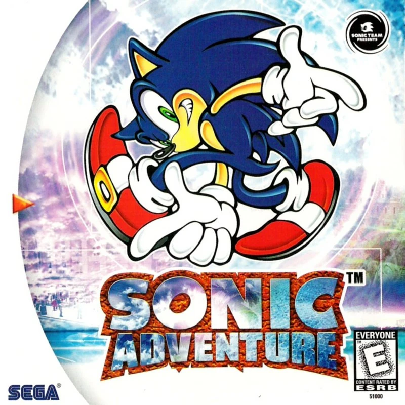
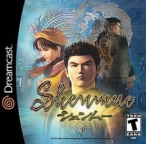
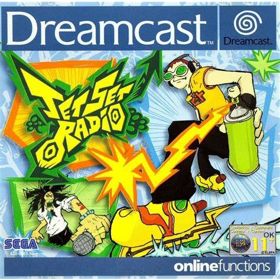
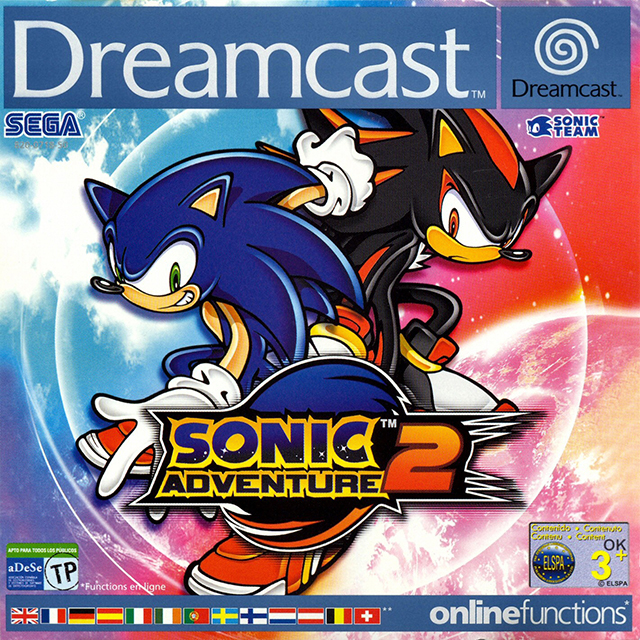

O Dreamcast foi um console de videogame lançado pela Sega em 1998, conhecido por sua inovação e por oferecer uma experiência de jogo avançada para a época. Foi o primeiro console a apresentar uma unidade de modem integrada, permitindo jogos online, e também introduziu o VMU (Visual Memory Unit), uma unidade de memória portátil que funcionava como um segundo display. Apesar de ser elogiado por sua qualidade de hardware e biblioteca de jogos impressionante, o Dreamcast enfrentou competição acirrada de consoles rivais e uma série de problemas de marketing. A Sega descontinuou o Dreamcast em 2001, marcando o fim da era dos consoles de videogame da Sega e uma transição para a produção de jogos de software.
Confira Alguns jogos desse classico console

Sonic Adventure
Sonic Adventure é um jogo de plataforma lançado para o Dreamcast em 1999. Nele, os jogadores controlam Sonic e outros personagens em uma aventura para salvar o mundo dos planos do Dr. Eggman.

Shenmue
Shenmue é um jogo de ação e aventura lançado para o Dreamcast em 1999. O protagonista, Ryo Hazuki, embarca em uma jornada para vingar a morte de seu pai e descobrir os segredos por trás de um artefato misterioso.

Jet Set Radio
Jet Set Radio, também conhecido como Jet Grind Radio, é um jogo de skate lançado para o Dreamcast em 2000. Os jogadores controlam skatistas rebeldes que desafiam autoridades e expressam sua arte urbana através de grafites.

Sonic Adventure 2
"Sonic Adventure 2" é um jogo de plataforma da Sega, lançado em 2001. Os jogadores escolhem entre Heróis (Sonic, Tails, Knuckles) e Vilões (Shadow, Dr. Eggman, Rouge), e o jogo inclui missões variadas e o modo Chao Garden.